原视频：Bilibili · BV1pb8o6yE8f（时长约 100 分钟） 课程：南京大学《生成式软件工程》（2026）第 01 讲 · Raw 版 整理说明：本书由视频语音转录后经 AI 重构而成，口语已转写为书面语；关键时间点标注 (参考时间)，截图卡片可跳转视频对应位置。
1. 开场：站在历史的交叉路口
(参考时间: 00:00)
课程开场颇具仪式感：主讲人从编辑器按下快捷键打开浏览器，正式上课，并提醒计算机专业学生——我们正站在非常重要的历史交叉路口。
回顾计算机发展史，每一次重大变革都有一个共同主题：把昂贵的能力变成日用品。
- 1975 年，第一台个人计算机 Altair 8800 诞生（开场幻灯片中的复古图本身也是 AI 生成的，「AI 味儿」明显）；
- 互联网时代，人与人被连接起来（主讲人回忆小学毕业时装 ICQ，腾讯山寨版当时还叫 OICQ）；
- 移动互联网时代，「一夜之间，所有菜场卖菜的人都挂上了支付宝和微信的二维码」；
- 2022 年，ChatGPT 出现，成为人类历史上增长最快的产品。
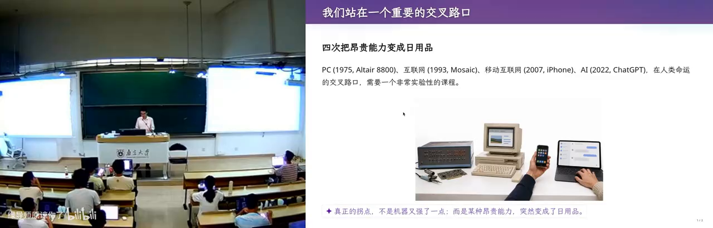
1975 年的第一台个人计算机（AI 生成的课程插图）在 B 站打开 (00:00:32)
在这样的人类命运交叉路口，上课的方式、该学什么，都需要重新思考。《生成式软件工程》正是在这一背景下开设。
2. AI 时代的焦虑：这门课为什么存在
(参考时间: 00:02:13)
2.1 「AI 替我上大学」
前两年流传一个说法：AI 替我上大学。仔细想很对——老师用 AI 出题，学生用 AI 做作业，整个闭环里只有学生没有受到训练。
Vibe Coding（用自然语言让 AI 写代码的工作方式）已经强到什么程度？曾经折磨一代代学生的操作系统实验，现在只要把作业链接丢给 coding agent，甚至说一句「蒋老师操作系统课第八个实验，帮我实现一下」，就结束了。
那么问题来了：这个年代还应不应该学编程？答案是既应该也不应该——有些能力仍然需要，但应该怎么做，没有人完全知道。
2.2 两种焦虑
- AI 帮我上完了大学，我什么都没学会。 若每门课都开卷、都由 AI 答题且全对，走出校门时你会发现自己第一个被 AI 取代。
- 我认真学了四年，却被大学「骗」了。 延续中学「老师说什么就做什么」的状态，毕业时却发现：你学会的东西，AI 都会做。
2.3 一份「零分简历」
最切实的痛苦来自求职。主讲人展示了一份收到的真实简历（个人信息已用 Unicode 方块抹掉）：
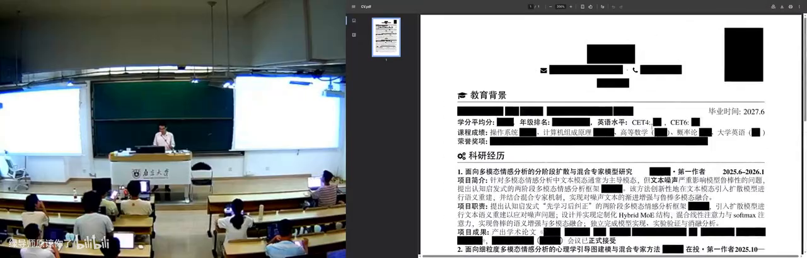
课上展示的一份 AI 生成的简历在 B 站打开 (00:04:41)
简历「完美」：一整排 CCF 期刊列表上的论文。但在主讲人眼中这是零分简历——
「所有这一切都是 AI 做的。我没有干任何事，我只是告诉它：有一份简历，我需要在上课时展示一下。」
它没有 GitHub 链接，没有个人主页，没有任何能证明「这个人真正做过什么」的信息。更糟糕的是，这样的简历他收到过无数份。当所有人的简历都长一个样子，你靠什么脱颖而出？
2.4 这门课的目的
好消息是，这门课希望缓解焦虑，更重要的是带大家还原 Vibe Coding 的快乐：
- 在快乐中理解软件工程是怎么工作的；
- 做出一些有趣的东西，让简历显得更好。
主讲人甚至抛出：对他来说，你有一篇已发表论文，可能是一个减分项（至少对他如此）。
3. 课程怎么上：把教学当成一场演出
(参考时间: 00:08:48)
3.1 案例驱动、松散组织
课程采用案例驱动、比较松散的组织形式。想当面讨论、想「拷打」老师的同学，欢迎线下到场；如果你是「听课型」同学，只想获取知识，那么既不用到课，也不用看直播。
3.2 幻灯片本身就是 AI 生成的
- 左边是主讲人课前写的讲义（Markdown）：预先想好每个时间点讲什么、举什么例子——相当于约束好 AI 要做什么；
- 播放幻灯片时，紫色部分全部是模型「添油加醋」加上去的内容；
- 所有插图全部由 AI 生成。
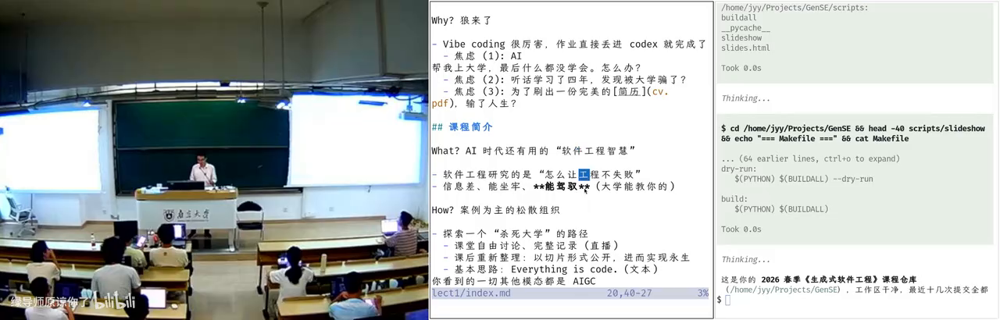
F5 播放的 AI 生成幻灯片（紫色部分为模型加工内容）在 B 站打开 (00:09:25)
背后是一个名为 make-slides 的 skill：从写好的演讲稿 Markdown 出发，生成多个 subagent（子智能体，在隔离上下文里各自干活的 AI 角色），赋予不同 personality（人格），最后主 agent 汇总。这就是「用算力换智力」：付出更多算力，就获得更多智力。
主讲人还展示了提示词的迭代方法：每换一版提示词就重新生成，再用另一个模型做盲评，比较哪一版幻灯片质量更高。
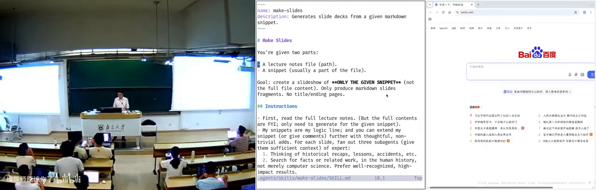
make-slides skill 的提示词在 B 站打开 (00:10:12)
3.3 上课是表演，表演要复盘
「上课是一种表演。我是一个演员，要调动大家的情绪，根据预先设定好的剧本做一场演出。」
演出结束后还有重要的事：review 今天的表演。哪个例子不恰当、哪个案例换一种讲法更好——即兴部分尤其需要事后复盘。课程内容会被重新切片、整理后再发布。
4. 课程政策：Token、考核与简历
(参考时间: 00:15:07)
4.1 Token 自费
课程第一条政策是 Token（模型按次计费的用量单位）自费。主讲人原想拉 Token 赞助，看到选课人数后放弃了。他甚至说了一句狠话：
「如果你们手上没有付费的 Token，就应该立即退学。」
当然这是夸张——他的意思是，在这个时代，Token 就是生产资料。课程演示会尽量使用足够便宜但智能尚可的模型：除了幻灯片生成用了更聪明的模型，课上几乎所有演示都由 DeepSeek V4 Flash（一种主打性价比的大模型）完成。
实用省钱建议：同学们是「夜猫子」，DeepSeek 在夜间低谷时段更便宜——白天上课是「峰时」，晚上做作业正好是「谷时」。每位同学充 100 块钱基本够用；实在有困难可以联系老师。
4.2 考核难题
主讲人申请课程时把考核方式填成「通过/不通过」，教务反馈：专业选修课一般不这么做。
背后是真实的时代难题：评判标准是什么？ 同一个任务，用更强的模型就是比用便宜 Flash 做得好，而课程没办法限制大家用什么模型，那该怎么评分？
关于考核方式的讨论在 B 站打开 (00:17:30)
建议是：实现一个自己的 eval（评估）管理系统——老师通过专用邮箱发邮件，你把邮件回回来；可以做一个常驻服务，跑在宿舍里一台一直开着的小电脑上。这本身就是一个不错的 Vibe Coding 实验。
4.3 分数不重要，简历才是唯一的考试
「到底什么叫做得好、做得不好，该给多少分？我觉得在这个时代，分数已经变得不那么重要了。」
真正重要的，是最后找工作或保研那一刻，你投出去的简历上有什么东西。对同学们来说，其实只有那一次「考试」。
比较糟糕的是，为了走到那一刻，你还需要不错的 GPA，还得去 reward hacking（针对考核指标钻空子式地优化）、去 overfit（过拟合：把应试套路练得极熟）那些考试题目。但最终检验你大学阶段的，是那一份交出去的简历。
课程最终期望：每位同学的简历上能写上「我在生成式软件工程里实现了 ABCDE」，附上链接，每一项都做得漂亮，都能说清楚设计与实现中了不起的地方。
4.4 一个恐怖的思想实验
如果每个人的电脑上都装了监控，AI 就能知道你大学四年干的所有事情——你摸的每一次鱼、你看的每一个不想让人知道的内容。这样的 AI 可以评判你度过了一个怎样的大学四年。
「当然这是非常恐怖的事情。我们不知道人类社会什么时候会演绎到那个程度。但是——保持 open，这是我们课程的 policy。」
5. 认识大语言模型：一个概率分布
(参考时间: 00:20:32)
5.1 大语言模型就是概率分布
「我今天不讲什么是大语言模型（LLM，通过海量文本学会预测下一个词的 AI 模型）——大语言模型就是一个概率分布。」
主讲人用概率统计课上的抛硬币问题作类比：已知抛了六次硬币、点数之和是多少，求第一次抛出 1 的概率——大家在概率课上都做过类似题目。大语言模型没有任何区别，它就是一个学到的概率分布：给它一本书（一段很长的文本，也可以是图像），书读到末尾结束了，你可以在书的后面再写几个字——比如「能不能帮我总结一下这本书」——接下来，模型就不断地预测下一个 token（词元，模型处理文本的最小单位）的概率。每次输出可以理解成吐出一个字符。
这个模型很大，它见过世界上几乎所有的东西；训练它很难——这就是为什么今天的前沿实验室（Frontier Labs）如此强大。
但这门课站在使用者的视角：你们只需要知道存在一个叫大语言模型的东西，打开 DeepSeek 的网页或 API，问一句「什么是大语言模型？」，它就会告诉你，而你此刻就在体验大语言模型。你不需要任何大语言模型的先验知识。
5.2 第一次被大模型「按在地上打」
主讲人第一次被大模型震撼，是 2023 年 GPT-4 时代，他给 5 岁的孩子解释什么是扫描电子显微镜。当时的 prompt（提示词，你写给模型的指令）写法还很朴素：「用朴素的语言，打一个合适的比方，帮助他理解这件事。」
GPT-4 给出的比方让他震惊：
你面前有一座山，你闭着眼睛看不到它的形状，但你想知道山长什么样，怎么办？你就对着山扔石头：朝这个方向扔，石头穿过去了；朝那个方向扔，石头弹回来了，你能听到声音。通过哪些地方穿过去、哪些地方弹回来——就像 ray tracing（光线追踪）一样——你就可以推测出山的形状。
小朋友大概听懂了。主讲人事后特意去查了资料：这个比方在科学上是对的。GPT-4 是一个幻觉（一本正经地编造事实）非常严重的模型，但在这个例子里，它既有知识，又给出了恰当类比。到了带 reasoning（推理）能力的新模型，还能给出更严谨的解释。
5.3 从 Prompt Engineering 到「一句话的事」
GPT-4 时代，人们用 prompt engineering（提示词工程）让模型生成各种奇怪的东西——主讲人举例：一个 prompt 要让模型给某个程序找到 150 个问题，需要反复调整。而到了新一代模型，同样的工作就是一句话的事情。
6. 从模型到 Agent
(参考时间: 00:24:10)
随着模型能输出越来越长的文本、也能接受越来越长的上下文，Agent（智能体）出现了。路径很清晰：
- 先有了推理模型（reasoning model）；
- 然后有了 ReAct 式的 coding agent。
原理其实很简单：语言模型本来只会输出下一个 token，那就让它输出一个特殊的 token——比如「调用一个 bash 程序」。这个 bash 程序会被真正执行，执行结果再重新送回 agent 的循环（loop）里。这样 agent 就可以自主运行，你就可以交给它一个比较复杂的任务。
graph TD
A["用户下达任务"] --> B["模型推理：下一步做什么"]
B --> C["输出特殊 token：调用工具"]
C --> D["工具真正执行"]
D --> E["执行结果回注上下文"]
E --> B
B --> F["任务完成，输出结果"]
(参考时间: 00:29:17)
未来会变成什么样？主讲人坦言无法预测：到底哪一条技术路线会胜出、哪一种模型会胜出，没有人知道。但可以预见的是，这个世界肯定会变得非常不一样。 在这个世界上我们该怎么办，是每一位同学都值得好好考虑的问题。
7. Agent 入门：原则与第一课
(参考时间: 00:29:44)
「吓唬人的事情说完了，我们可以吸一口气。」接下来进入课程的主要内容：怎样实际操作一个 agent。主讲人假设大家其实并不太会用 agent——除了「帮我把这个作业做了」以外。
7.1 课堂演示：一个配置了 AGENTS.md 的 Agent
课上选择的 agent 工具，只要跟它说话就可以干活，并且支持配置文件，比如 AGENTS.md（放在项目里、描述「你是谁、这个项目是什么」的说明书）：
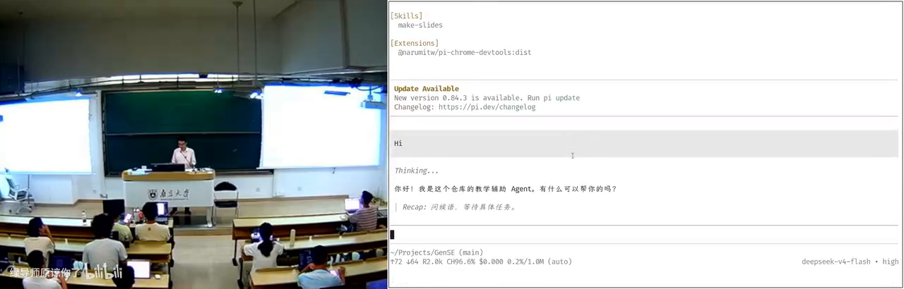
向 Agent 提问「你是谁」：它通过 AGENTS.md 知道自己是课程教学辅助在 B 站打开 (00:31:05)
你可以问它：「你是谁？」它会回答自己是《生成式软件工程》的教学辅助。再追问：「你不就是个模型吗，为什么还知道生成式软件工程？」它会告诉你：之所以知道这门课、这个仓库，是因为读到了 AGENTS.md。
由此引出使用 agent 的前两个原则：
- 原则一：现在就开始用；
- 原则二：随时问它。
在此之上，还有更本质的一条：你的想象力，限制了你的 agent 的上限。
7.2 案例一：整套上课系统都是 AI 装的
主讲人的第一个例子，就是他当天上课用的整套系统——所有配置和安装全部由 AI 完成。
他教操作系统课一直有个传统：带一个 U 盘，里面装一个 Linux 系统，插到教室电脑上直接启动。装机曾经是很痛苦的事；而现在，「装机仙人」已经彻底被 AI 取代——他只用了一句话：
你去 mirrors.nju.edu.cn 上找一个 Debian 13 的镜像，
把它装到我的 U 盘上，确保这个 U 盘可以启动，
然后用模拟器验证。
点睛之笔是「用模拟器验证」。Agent 装完之后，真的在 QEMU（一种虚拟机软件）里启动系统，看到登录界面，创建用户、设置密码，确认登录成功，然后汇报「验证完成」。
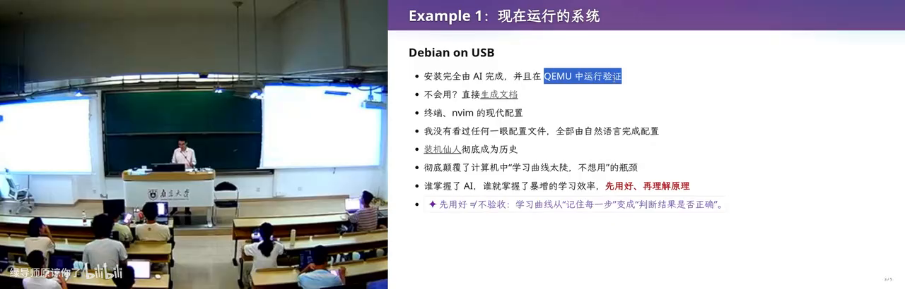
U 盘 Linux 系统在 QEMU 中启动验证在 B 站打开 (00:33:59)
当然，主讲人自己是有「脑袋」的——他知道这个安装是怎么完成的。但这不妨碍整个流程由 AI 执行。
7.3 案例二：平铺窗口管理器与「从不看配置文件」
同样的方式，他让 AI 装了一个平铺式（tiled）窗口管理器：
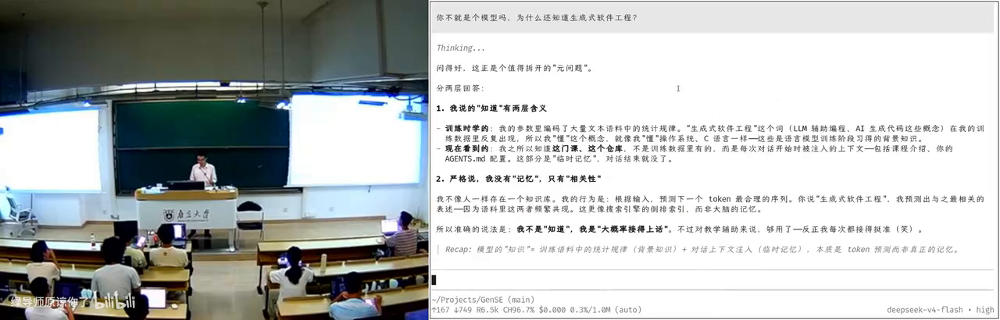
平铺窗口管理器演示在 B 站打开 (00:34:30)
不会用怎么办？他直接让模型生成了一份文档：「看一下我系统现在的设置，我要做各种事情，怎么办？」模型告诉他快捷键是什么。
「所有的文档，包括你看到的 Neovim 的现代配置，我没有看过任何一眼配置文件。所有的一切都是用自然语言完成的。我只是让它『包交付』。」
主讲人感慨：他大四时捧着几千页的 CPU 手册逐条研读。而在这个时间点，有一个「人」可以跟他沟通，把这些东西全看了、都懂、能做对——他需要做的，是解锁它的能力。
「你学习知识的方式变了。你更多时候需要知道它能做什么、能做到什么程度，然后带着它去做一件更大的、它自己做不到的事情。人现在唯一的功能，就是带着 AI 做 AI 现在做不到的事情。」
8. 案例集：Agent 的日常操作
(参考时间: 00:36:44)
Agent 彻底颠覆了计算机科学的学习曲线。主讲人举了大家都有共鸣的场景：配置终端。
8.1 终端配置：从「一改就出错」到「情绪价值」
你们都在网上看过别人花里胡哨的终端，自己也想搞一个——结果配置文件一改就出错，非常痛苦。有了 agent，一点也不痛苦：它不仅可以帮你改，还能事无巨细地解释为什么要这样改；你有什么新想法，它立刻说「好好好」，还给你情绪价值。
「谁掌握了 AI Agent，谁就掌握了暴增的学习效率。」
他推荐的学习方式是：先把东西搞出来，再回头复盘理解。 这个效率比从零开始一点一滴学要高得多。但危险在于：你的理解可能与「比较好的理解」存在差距。
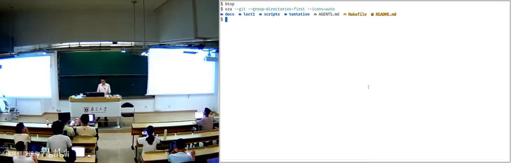
现代化终端：进程监控、ls→eza、find→fd 等，全部由一条 prompt 配置完成在 B 站打开 (00:25:50)
顺带一提，他现场展示的现代化终端——漂亮的进程监控（btop）、ls 自动替换为 eza、find 自动替换为 fd——全部来自一条 prompt：「帮我把命令行终端和系统都配置成现代的样子、比较好用的样子。」模型用的还是便宜的 DeepSeek V4 Flash。
8.2 收发邮件、写草稿、管发票
主讲人有一个自己的邮件 skill：数据库里存着历史上回过的所有邮件。每当收到一封新邮件，agent 会：
- 自动标记为已读；
- 自动用他的口吻写好回复草稿（简单邮件可以直接发，大部分还得改）；
- 把重要附件归档——比如收到一张发票，自动保存到指定位置。
这些全靠事先写好的 instructions。更有意思的是与待办系统的联动：在手机的提醒事项里加一句「帮我把今天的发票打印出来」，后台处理完毕后，agent 会推送通知到手表上。
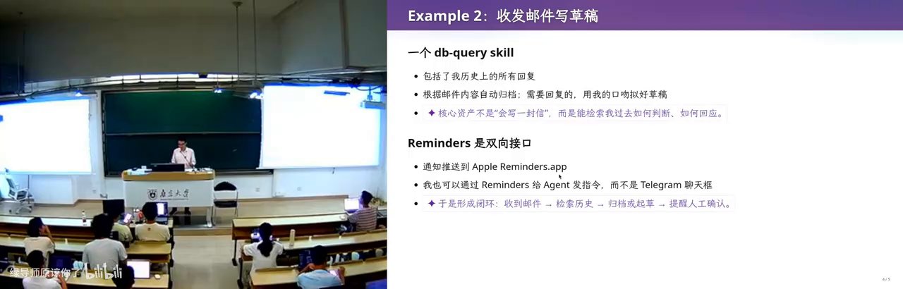
在 Reminders 中添加「打印发票」任务在 B 站打开 (00:39:19)
8.3 用 AI 读书、读论文
「你们还读书吗？还看论文吗？看论文痛苦吗？」主讲人自认很爱看书，而今天，他已经不怎么看书了。
他的读书方式是这样的：自己读完第一章，然后——agent 启动。读论文时的 prompt 思路是：从人类已有的知识出发，假设所有已知的东西都是「已知的」，把这篇论文里真正新的、最少的东西剥离出来。 这样一篇 12 页的论文基本剩不下多少——「所以我现在读论文的效率非常高。」
「我仍然是读论文的。我不是那种只看微信公众号学习的人。」
8.4 用 AI 看 B 站视频
「我不仅用 AI 读书、读论文，我还用 AI 上 B 站。」当然，如果是纯娱乐，就不要用 AI 读了。他的流程是：
- 给一个 BV 号；
- Agent 把它整理成自动的图文时间轴——文本质量比字幕更高；
- 图片密度可控：两帧间隔大到一定程度就截图——这些截图就是视频的 ground truth（可核对的硬证据）；
- 结合他的记忆来消化这个一个多小时的视频：把所有对他来说 trivial（琐碎、已会）的内容去掉，剩下的才是需要看的。
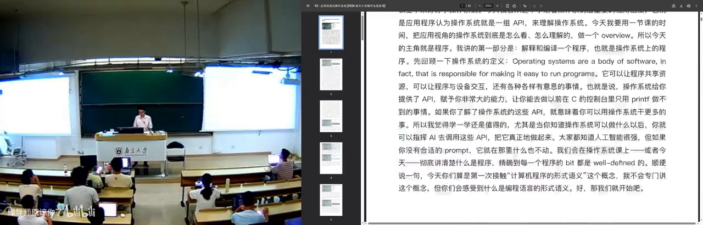
B 站视频被自动整理成图文时间轴在 B 站打开 (00:46:05)
于是，他可以在几分钟内「看完」一个两小时的视频。
9. Skill 生态与个人知识飞轮
(参考时间: 00:47:00)
9.1 10 倍、100 倍的差距
把前面所有案例加在一起，结论有些残酷：
「在 AI agent 的时代，会用 agent 学习的人，和不会用 agent 学习的人，学习效率的差距是 10 倍、100 倍。你们坐在这里，怎么和一个效率是你 100 倍的人竞争？」
回到开头那份简历：如果所有人的简历看起来都一样，那么你应该想一想——那个学习效率是你 100 倍、你看不见的人，他的简历长什么样？
9.2 课间插曲：Agent 修好了直播采集卡
课间发生了一个绝佳的实时案例：直播用的 USB 采集卡断了。主讲人当场让 agent 修复：「我的 USB 有问题，能不能 reconnect？」模型用了一些「你们前所未见的 Linux 命令」——用软件的方式把采集卡「拔出来又插进去」。拔了一下、插了一下，好了。
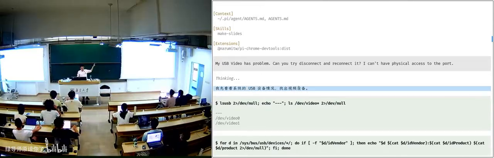
一条 prompt 让 Agent 排查并重置 USB 采集卡在 B 站打开 (00:49:36)
9.3 白板 Agent + 一个 API Key
主讲人强调：刚才展示的这些，还不是 AI 的真正形态。作为普通人，你看到的是一个「白板」的 agent 客户端——什么也没有。你从官方网站安装下来，配置一个 API key（调用模型的密钥），你立即就可以得到刚才所有的那些东西。
9.4 Skill：AI 时代的开源脚本
Agent 远不止于此——它有完整的生态系统。主讲人引用了他课上反复提到的「计算机科学定律」：
「如果有一件事情它是合理的，并且你想做，那么 100% 一定也有别人想做。」
在 pre-AI 时代，开源社区会公开脚本，到 GitHub 上拉下来就能用。在 AI 时代，复用别人的能力变得前所未有的轻松——可以往 Skill Hub 上发布一个 skill，你可以在 agent 的插件生态里找到它。
所以普通人下一步应该做什么？用插件把浏览器「管」起来，用插件把电脑「管」起来。
9.5 Unix 哲学与生态临界点
主讲人教操作系统，他提到了 Unix 哲学成立的原因：管道（pipe）实现了所有程序的自由组合与无限复用——1+1 是可以大于 2 的。
同样的道理，skill 可以加在一起、互相调用。AI agent 的生态其实已经达到了一个临界点：很快你就会看到，这些东西互相组合，可以成百倍、成千倍地放大个人的能力。
9.6 个人知识飞轮
对普通人来说，这意味着什么？你可以找到世界上各种各样的信息源——订阅一份 AI 早报、B 站的推送、arXiv 的推送、Hacker News 的推送——然后把「处理这些信息」的能力沉淀成 skill 或脚本，搭建一个信息处理系统：
graph LR
S1["RSS / AI 早报"] --> P["信息处理系统"]
S2["B 站推送"] --> P
S3["arXiv 推送"] --> P
S4["Hacker News"] --> P
P --> K["对你有用的知识"]
K --> F["不断调整工作流"]
F --> P
大量的信息源进入处理系统，处理系统由各种各样的 skill 构成——全部是自然语言，一行代码都不用写，但可以复用。你会不断调整这个工作流，它就会不断产生对你有用的知识——你的飞轮就转起来了。
这时候你就能理解，为什么个人 agent 产品能给人这么大的惊喜。主讲人对此并不惊讶，他更多是自己管理流程，把东西写进自己的记忆库。
9.7 让 AI 改进你的流程
「你就问 AI：我这一天干的这些事，你觉得我还有没有提升空间？」
很有可能——尤其是初学者阶段——还有很大的提升空间。
10. 浏览器自动化：DevTools 与填表实战
(参考时间: 00:51:36)
10.1 浏览器是软件工程的奇迹
「浏览器是一个非常好的工程产品，可以说是人类软件工程史上的奇迹之一。它看起来只是一个显示网页的东西，但代码量甚至远超操作系统内核。」
浏览器有一个专为开发者设计的接口：Chrome DevTools（按 F12）。一个冷知识：很多网站会在 Console 里嵌入招聘广告。
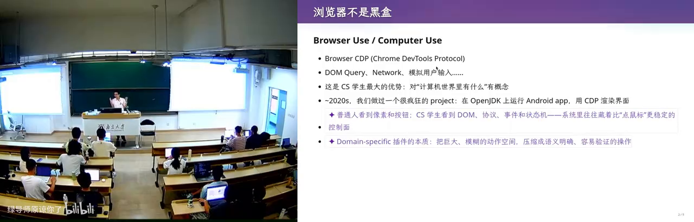
Chrome DevTools：F12 打开的开发者工具在 B 站打开 (00:52:36)
在 pre-AI 时代，开发者用 DevTools 做什么？比如在 Network 面板找到一个请求，Copy as cURL——把命令连同浏览器的 Cookie、所有状态一起复制出来，在终端里直接请求，就能拿到数据。
10.2 实战：让 Agent 填写教学周历
现场演示的任务是：填写教学周历。「你们都很讨厌动不动就叫你们填东西吧？我也很讨厌。」
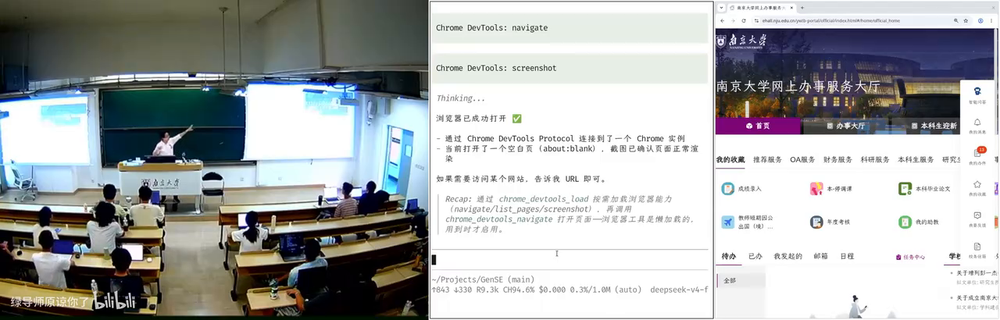
Agent 打开内置浏览器，准备填写教学周历在 B 站打开 (00:55:54)
他让 agent 打开浏览器，然后下达指令：「现在教学周历是空的，帮我随便用什么 AI Slop（AI 量产的、看起来像模像样却空洞的内容）填写。不要看任何东西！」
过程并不顺利：模型一直在干别的事，不听指令。翻车也是经常有的。
关键的教学点：你看到 agent 的过程——它会不断反思自己做得合不合理，然后找到应该怎么办。看起来翻车了，其实它在尝试；尝试之后，它找到了正确的方式——直接注入事件不行，但模拟鼠标点击可以。
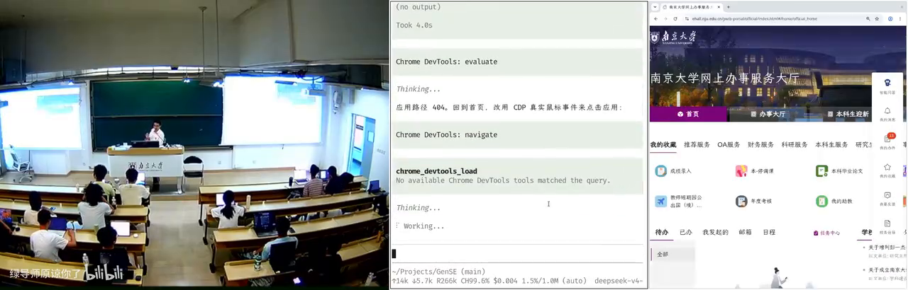
Agent 反思与重试：事件注入失败后改用鼠标点击在 B 站打开 (00:58:37)
10.3 CS 从业者视角：知道边界在哪里
「如果你们只是用 agent 说『帮我把操作系统作业做了』，那你们真的是太小看它了。」
CS 从业者非常清楚编程能力的边界在哪里。普通人也很容易提出一个需求，但 agent 可能做不好、做不了。而 CS 的人知道：怎么把需求「编译」成 agent 能做的任务——什么东西可以复用、什么应该以代码的形式复用、什么应该以 skill 的形式复用。
11. 结语：古法编程已死，软件工程未死
(参考时间: 课程后段)
课程希望重新找回「上课耽误学习」的感觉：你可能可以不上课，但要去实践。禁止古法编程——不是说你们不会手写代码，而是这个时代要求你学会带着 AI 做更大的事。
回到软件工程本身：大学里能教你的，比较重要的第一是信息差（你有别人不知道的信息，才能做别人做不到的事）；更重要的，是怎样成为一个更好的人——你能够驾驭别人驾驭不了的东西。
这门课试着帮大家建立驾驭人工智能的能力。
最终检验你大学阶段的，是那份交出去的简历：能不能带你到下一个更高的平台。希望你们在简历里写上：我在生成式软件工程里实现了 ABCDE——每一项都有链接，每一项都说得清设计与实现中了不起的地方。
附录：概念补给
给可能「只听过、没深究」的同学：每条尽量先说人话，再扣回本讲。
大语言模型（LLM）
- 是什么：通过海量文本学会「预测下一个词」的 AI 模型。
- 课上为何出现：整门课的工具底座；站在使用者视角，不必会训练。
- 和什么像：超级会接龙的读书人；你给一段话，它接着往下写。
Token
- 是什么：模型处理文本的计费/计量单位，约等于「字或词片段」。
- 课上为何出现：课程 policy「Token 自费」；省钱与生产资料的隐喻。
- 常见误解：不是「一个汉字=一个 token」，中文常更碎。
Prompt（提示词）
- 是什么：你写给模型的自然语言指令。
- 课上为何出现：装机、配终端、填表，很多事「一句话」就够。
- 和什么像：给实习生的任务说明——说得越具体，越不容易做偏。
Vibe Coding
- 是什么：用自然语言驱动 AI 写代码的工作方式。
- 课上为何出现：作业与实验的主形态；快乐与焦虑并存。
- 常见误解：不等于「完全不管」；Intent 不清时 AI 很会生产空洞产出。
Agent（智能体）
- 是什么：能读上下文、规划步骤、调用工具并循环推进任务的 AI。
- 课上为何出现：从「会聊天」到「会干活」的转折点。
- 和什么像：不只会聊天的实习生，还能自己开电脑干活。
AGENTS.md
- 是什么：放在项目里、告诉 Agent「你是谁、项目是什么」的说明书。
- 课上为何出现：课堂演示「它怎么知道这门课」。
- 和什么像：工位上的新人入职手册。
Skill（技能/插件）
- 是什么：可复用的指令/流程封装，让 Agent 一键获得某种能力。
- 课上为何出现：AI 时代的「开源脚本」；知识飞轮的积木。
- 和什么像：手机 App：装上就会多一件事，不必每次从头教。
Prompt Engineering / 上下文工程
- 是什么：设计指令与整段模型可见输入，让输出更符合你要的结果。
- 课上为何出现：GPT-4 时代要反复调；新模型更「一句话」，但原理仍在。
- 和什么像：写清楚需求文档，而不是只喊一声「你看着办」。
Subagent（子智能体）
- 是什么：主 Agent 派出去、在隔离上下文里干活的分身。
- 课上为何出现：make-slides 用多个 personality 各写一版，再汇总。
- 和什么像：老师让几个助教分头备课，最后自己定稿。
幻觉（Hallucination）
- 是什么：模型一本正经地编造不存在或错误的事实。
- 课上为何出现：GPT-4 幻觉严重，但电镜比方恰好是对的——要会核对。
- 和什么像：口才很好的朋友讲历史，细节未必都靠谱。
Reward Hacking / Overfit 应试
- 是什么：针对考核指标钻空子式优化，而不是真正变强。
- 课上为何出现：高 GPA 可能仍要 reward hacking；简历才是最终考试。
- 和什么像：刷题套路极熟，换一张卷子就不会了。
算力换智力
- 是什么：多开子任务、多跑几版，用更多计算换更好结果。
- 课上为何出现：make-slides 多 personality + 盲评迭代。
- 和什么像：多请几个顾问各出方案，再开会定一个。
个人知识飞轮
- 是什么：信息源 → 处理系统（skill）→ 有用知识 → 改流程，循环加速。
- 课上为何出现：普通人如何在信息爆炸里建立复利。
- 和什么像：健身 App：记录→分析→调整计划→再记录。
焦油坑（Tar Pit）
- 是什么：项目越改越难维护、越投入越陷进去的泥潭。
- 课上为何出现：后续 Lab 若只堆 AI 产出、不管架构，会掉进去。
- 和什么像：房间越堆越乱，找东西越找越久。
书架 Shelf 流水线生成 · 内容衍生自 B 站公开课程视频 BV1pb8o6yE8f